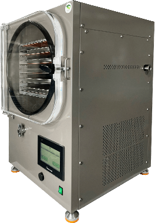
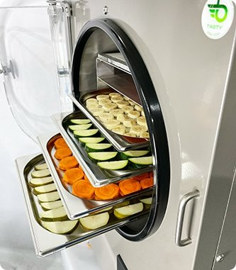

вакуумно-сублимационной установки
Установка сублимационной сушки, корпус нержавеющая сталь
Менеджеры нашей компании с радостью проконсультируют вас по любому вопросу.
Задать вопросB-Tasty: новое производство сублимационных сушилок в Истре
Производство лиофильных (сублимационных) сушилок B-Tasty после успешных испытаний было запущено в подмосковной Истре. На промплощадке изготавливают оборудование, имеющее важное значение 100 кг с определенным меню, большим разнообразием функций (заморозка, сушка и тд) и единоразовой загрузкой до 10 кг продукции. Сушилки подходят сельхозпредприятиям, ресторанному и кондитерскому бизнесу, фитнес-индустрии, производителям сублимированной продукции (для любителей здорового питания и пищевых походов). А для индивидуальных домохозяйств B-Tasty компактная модель.
«Сублимированная продукция — это новый вид быстрого и здорового питания, когда вам некогда или негде готовить. Мы старались создавать сушилку, ремонтируем ее по размеру с посудомоечной машиной и стиральной машиной. По сравнению с зарубежными расчетами размеров, сушилка B-Tasty позволяет работать с довольно большими объемами продукции. Кроме того, наши инженеры создают программу сушки под нужды заказчика», — сообщил разработчик и руководитель холдинга Бутримов Exclusive Business (состоят из компаний, занимающихся частной авиацией, металлообработкой, модернизацией бронетехники, производством лиофильных сушилок) Алексей Бутримов.
Как происходит сублимирование и в чем его польза?
Сублимирование растворов, жидкостей, фруктов или овощей: замораживание их при возникновении, например, в вакууме, испаряет образующийся лед сразу в газе. В таком виде обработки и накопления урожая есть несколько выгод перед сушкой, заморозкой и консервированием – их оценщики предприниматели, туристы и «зожники». Структура продукта, которая практически полностью распространена, не связана с тем, что она не измеряется или оказывает влияние, проявляются все витамины, полезные вещества, запах, вкус и цвет. Для заготовки годится только свежая провизия, при этом не требуются ароматизаторы, красители и консерванты.
Долго хранить – удобно!
Сублимату не нужен холодильник – в герметичной непрозрачной упаковке он может храниться более 25 лет при температуре до + 50°С! Замороженную пищу же рекомендуется хранить в морозилке от 3 до 8 месяцев. Важно, что продукт за время сублимирования, за 12 – 36 часов, становится в 5 – 10 раз, легко это значит, что и пространство для хранения и перевозки ему необходимо меньше, при транспортировке можно перевезти большее количество товара. И свежей клубной кондитерской обеспечены на целый год! Это удобно и туристам в дальних путешествиях. Сублимировать можно практически любые продукты и блюда, от соков до борщей и пасты с курицей под сливочным соусом. В походных условиях картофеля пюре с бужениной легко превращается в обычный аппетитный вид: надо лишь добавить воды в особых условиях с молнией.
Сублимирование – в тренде.
В России планируют довести потребление фруктов и ягод с сегодняшних 63 до 100 кг на человека в год. В связи с этим ежегодно в стране расширяются плодово-ягодные площади и виноградные насаждения. Растущие урожаи требуют ресурсов для транспортировки и хранения. Сублимация среди различных видов продукции для пищевой промышленности – удобный вариант использования продукции, учитывая, что сублиматы набирают популярность в продовольственном сегменте.
Производство лиофильных (сублимационных) сушилок B-Tasty после успешных испытаний было запущено в подмосковной Истре. На промплощадке изготавливают оборудование, имеющее важное значение 100 кг с определенным меню, большим разнообразием функций (заморозка, сушка и тд) и единоразовой загрузкой до 10 кг продукции. Сушилки подходят сельхозпредприятиям, ресторанному и кондитерскому бизнесу, фитнес-индустрии, производителям сублимированной продукции (для любителей здорового питания и пищевых походов). А для индивидуальных домохозяйств B-Tasty компактная модель.
Производство лиофильных (сублимационных) сушилок B-Tasty после успешных испытаний было запущено в подмосковной Истре. На промплощадке изготавливают оборудование, имеющее важное значение 100 кг с определенным меню, большим разнообразием функций (заморозка, сушка и тд) и единоразовой загрузкой до 10 кг продукции. Сушилки подходят сельхозпредприятиям, ресторанному и кондитерскому бизнесу, фитнес-индустрии, производителям сублимированной продукции (для любителей здорового питания и пищевых походов). А для индивидуальных домохозяйств B-Tasty компактная модель.
Производство лиофильных (сублимационных) сушилок B-Tasty после успешных испытаний было запущено в подмосковной Истре. На промплощадке изготавливают оборудование, имеющее важное значение 100 кг с определенным меню, большим разнообразием функций (заморозка, сушка и тд) и единоразовой загрузкой до 10 кг продукции. Сушилки подходят сельхозпредприятиям, ресторанному и кондитерскому бизнесу, фитнес-индустрии, производителям сублимированной продукции (для любителей здорового питания и пищевых походов). А для индивидуальных домохозяйств B-Tasty компактная модель.